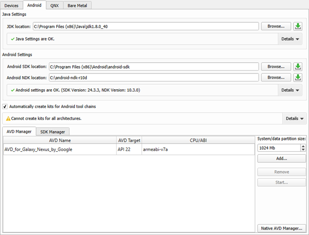
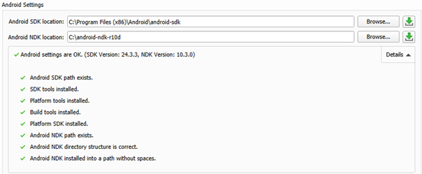
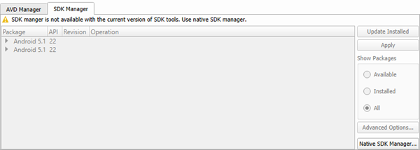
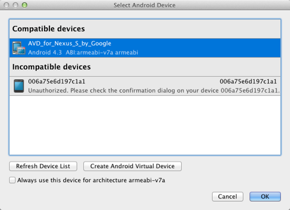

Connecting Android Devices
You can connect Android devices to the development PC to run, debug, and analyze applications built for them from Qt Creator. Devices with Android version 4.1 (API level 16) or later are supported.
If you have a tool chain for building applications for Android devices installed on the development PC, you can add it to Qt Creator. You can then add a kit with the Android device type, the tool chain, and the Qt version for Android, to build applications for and run them on Android devices. You can also allow Qt Creator to automatically configure the kit.
The Android Debug Bridge (adb) command line tool is integrated to Qt Creator to enable you to deploy applications to connected Android devices, to run the applications on them, and to read logs from them. It includes a client and server that run on the development host and a daemon that runs on the emulator or device.
Requirements
To use Qt Creator to develop Qt applications for Android, you need the following:
- Java SE Development Kit (JDK) version 6, or later. You can also use OpenJDK on Linux.
Note: Android SDK Tools have issues with JDK versions later than 8.
- Gradle for building application packages for Android devices (APK). Gradle is delivered with Qt 5.9, and later. Because Gradle scripts are not delivered with Android SDK Tools since version 26.0.0, they are delivered with Qt 5.9 and 5.6.3.
Note: Using Ant to build APKs is no longer supported.
- A tool chain for building applications for Android devices provided by the Android NDK from Google.
- Android SDK Tools
The following Android SDK packages and tools are required for development:
- Platform tools
- Build tools
- At least one SDK platform
- On Windows, you also need the following:
- Android Debug Bridge (ADB) driver on the Windows platform to enable USB debugging. The default USB driver on Windows does not allow debugging. For more information about obtaining the USB driver, see http://developer.android.com/sdk/win-usb.html.
After installing the driver, try running a few basic adb commands to check that your device responds to them.
Note: When using the command line tools instead of Android Studio, it is recommended to create an empty folder and extract the downloaded archive into this folder. The sdkmanager will install downloaded packages next to the
toolsfolder that contains all command line tools. You must specify the path to the folder where you extracted the files as Android SDK location inside the Android settings. - Android Debug Bridge (ADB) driver on the Windows platform to enable USB debugging. The default USB driver on Windows does not allow debugging. For more information about obtaining the USB driver, see http://developer.android.com/sdk/win-usb.html.
Setting Up the Development Environment
You must download and install the latest Android NDK and SDK, and then update or install the tools and packages needed for development. However, if your Qt version is earlier than v5.9, use the SDK tools package v25.2.5 or earlier.
The SDK tool used to update and install the other SDK tools and packages depends on the Android SDK Tools version that you have installed:
- Android SDK Tools version 25.2.5, or earlier
Use the android tool that comes with the SDK Tools package. For example, on Ubuntu the following command starts the SDK update:
./android update sdk
- Android SDK Tools version 25.3.0, or later
Use the sdkmanager command line tool for SDK package management and the avdmanager tool for Android Virtual Device (AVD) management.
In addition, you must install Qt for Android as part of Qt 5.2, or later.
Note: You can build a 64-bit version of Qt for Android yourself. However, for such a Qt version, the minimum required Android version on devices is 5.0 (API level 21).
For more information, see Qt for Android.
Specifying Android Device Settings
To configure connections between Qt Creator and Android devices:
- Select Tools > Options > Devices > Android.

- In the JDK location field, add the path to the JDK.
You can use the (Download) button to go to the site where you can download the JDK. Qt Creator checks the JDK installation and reports errors.
- In the Android Settings group, add paths to the Android NDK and SDK.
You can use the (Download) buttons to go to the sites where you can download the Android NDK and SDK.
The SDK Manager checks the Android NDK and SDK installations, reports errors, and offers to install the necessary packages.

For more information, see Managing Android SDK Packages.
- Select the Automatically create kits for Android tool chains check box to allow Qt Creator to create the kits for you. Qt Creator displays a warning if it cannot find a suitable Qt version.
- Select File > New File or Project > Application > Qt Quick Application > Choose, and follow the instructions of the wizard. For more information, see Creating Qt Quick Projects.
- To specify settings for deploying applications to Android, select Projects > Run for the Android kit, and then select Details to view the Deploy configurations. For more information about the options you have, see Deploying Applications to Android Devices.
- Enable debugging on your Android device.
Debugging is enabled in different ways on different Android devices. Look for USB Debugging under Developer Options. On some devices Developer Options is hidden and becomes visible when you tap the Build number field in Settings > About several times.
- Connect the Android device to the development PC with a USB cable. You might be asked to select a device in the Select Android Devices dialog.
Managing Android SDK Packages
Since Android SDK Tools version 25.3.0, only a command-line tool, sdkmanager, is provided by Android for SDK package management. To make SDK management easier, Qt Creator provides an SDK Manager for installing, updating, and removing SDK packages. You can still use sdkmanager for advanced SDK management.
When you add paths to the Anroid NDK and SDK in the device options, the SDK Manager checks that all the necessary SDK packages have been installed. If packages are missing or updates are needed, the SDK Manager offers to add and remove packages, as necessary. Before taking action, it prompts you to accept the changes it is about to make. In addition, it prompts you to accept Google licenses, as necessary.
To view the installed Android SDK packages, select Tools > Options > Devices > Android > SDK Manager.

To filter the packages, select Available, Installed, or All in Show Packages.
To update the installed Android SDK packages, select Update Installed. Select the packages to update, and then select Apply.
To specify advanced sdkmanager settings, select Advanced Options and enter arguments in the SDK Manager arguments field. The available arguments are listed and described in Available arguments.
To manage packages installed from Android SDK Tools version 25.2.5, or earlier, you can use the native Android SDK Manager. The Qt Creator SDK Manager and the native SDK Manager are mutually exclusive, because they are used for different Android SDK Tools versions. If you have the native SDK Manager installed, you can open it by selecting Native SDK Manager.
Selecting Android Devices
When you deploy an application to an Android device with Android version 4.2 or later, the Select Android Devices dialog opens. It lists the devices that are connected to the development PC. and their status. You can select devices from the Compatible Devices list for deployment.
If Qt Creator determines that a device is not ready for deployment, it places the device in the Incompatible Devices list, with information about the issue. For example, you might need to authorize the connection on the device. After you authorize the connection on the device, select Refresh Device List. The device is moved to the Compatible Devices list and you can select it for deployment.
Other reasons for placing a device on the Incompatible Devices are that the Android version on the device is too old or that the tool chain used for building does not match the Android architecture on the device (for example, you cannot deploy an ARM build on an x86 device).

AVDs are also listed. To create new AVDs, select Create Android Virtual Device.
To set a device as the default device for a particular Android architecture, select the Always use this device for architecture check box. The Select Android Devices dialog will not appear until you switch to another project or restart Qt Creator.
Using the Android Emulator
To run your application on the Android Emulator, you must create Android virtual devices (AVD). Select Tools > Options > Devices > Android > Add. If you run an application without a device connected to the development PC and without an AVD specified, Qt Creator asks you to add an AVD.
To manage AVDs, select Start AVD Manager.
Note: The Android Emulator has a bug that prevents it from starting on some systems. If the Android Emulator does not start, you can try starting it manually by running the emulator-arm command from the command line.
Debugging on Android Devices
Select a debug build configuration to build the application for debugging.
Note: Qt Creator cannot debug applications on Android devices if Android Studio is running. If the following message is displayed in the Output pane, close Android Studio and try again: Ignoring second debugger - accepting and dropping.